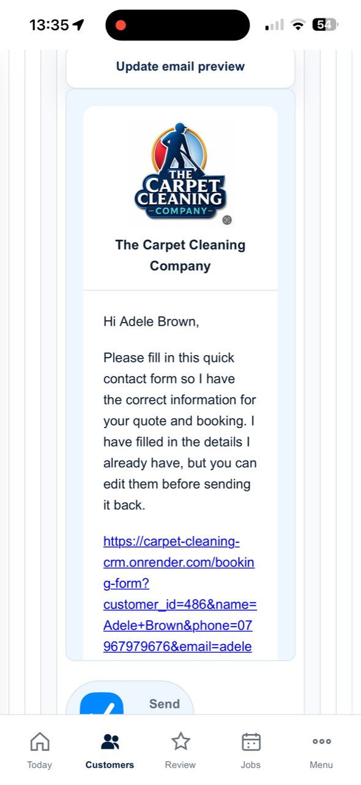

01
Customer fills in your website form
The customer submits a quote request. Their contact details and cleaning list arrive in one place.

02
Five-minute automated response
A friendly text and email go out while the inquiry is still warm. The message asks what needs cleaning and prepares the conversation.

03
Customer replies with their cleaning list
The Business Manager puts the reply against the customer and makes the next action clear.

04
The automatic quote is prepared
Your price book, room packages, cleaning methods and extras are used to build a quote draft.

05
Review and send the quote
Check the items, choose the method, adjust if needed and send a professional quote.

06
Book, remind, review and rebook
Accepted work goes in the diary. Send reminders, ask for a Google review and use six- or twelve-month rebooking messages.